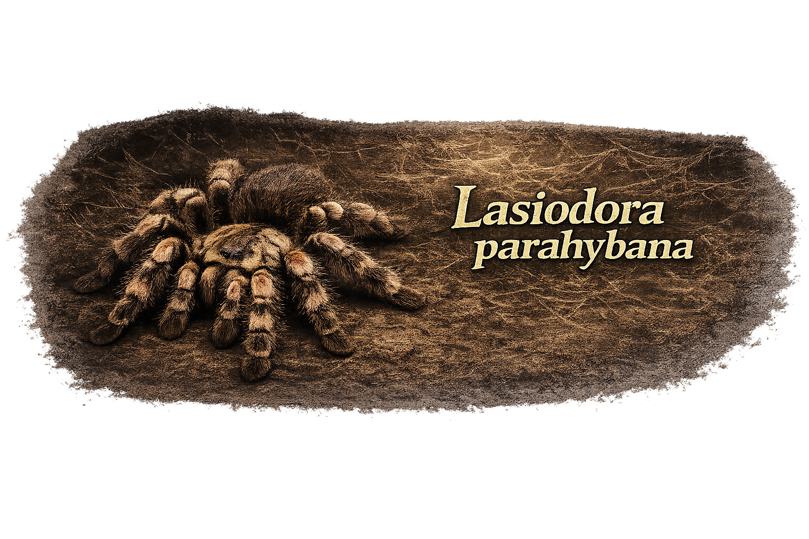
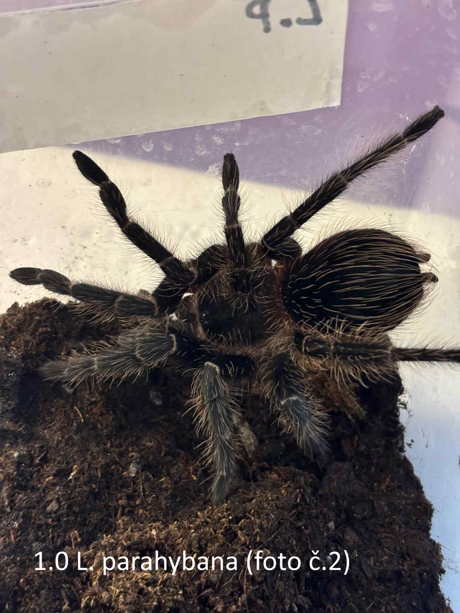

Latinský název: Lasiodora parahybana
Běžný název: Brazilian Salmon Pink Birdeater
Původ: severovýchodní Brazílie (zejména stát Paraíba a okolní oblasti Atlantického lesa)
Typ: pozemní sklípkan (terestriální druh, který může vytvářet mělké nory)
Velikost v dospělosti: přibližně 20–25 cm rozpětí nohou (výjimečně i více)
Délka života: samice až 15–20 let, samec přibližně 3–6 let

Lasiodora parahybana patří mezi největší druhy sklípkanů běžně chovaných v teráriích. Pochází z tropických oblastí severovýchodní Brazílie, kde obývá především lesní půdu, úkryty pod kameny, kořeny nebo v mělkých norách v půdě.
Dospělí jedinci mají obvykle tmavě hnědé až černé zbarvení těla s výraznými růžovými až lososově zbarvenými chloupky na končetinách a zadečku. Právě tyto jemné chloupky dávají druhu charakteristický vzhled, podle kterého získal své anglické jméno „Salmon Pink“.
Tento druh patří mezi New World sklípkany, kteří mají na zadečku obranné (urtikační) chloupky. Při vyrušení je může vyčesávat zadními nohami směrem k predátorovi. Tyto chloupky mohou způsobit silné podráždění kůže nebo očí.
V porovnání s některými jinými velkými druhy sklípkanů je Lasiodora parahybana považována za poměrně odolný a rychle rostoucí druh. Díky tomu je často doporučována i méně zkušeným chovatelům, kteří chtějí chovat velkého sklípkana. Tento druh patří mezi nejrychleji rostoucí velké sklípkany a při dobrých podmínkách může dospět přibližně za 2–3 roky.
Samice tohoto druhu dokáže vytvořit velmi velký kokon obsahující více než 1000 vajíček, někdy až kolem 2000–3000, což je mezi sklípkany mimořádně vysoké číslo. Právě díky této vysoké reprodukční schopnosti se Lasiodora parahybana stala jedním z nejrozšířenějších druhů sklípkanů v chovech po celém světě.
Terárium: horizontální typ s dostatečnou plochou dna (např. přibližně 40 × 30 × 30 cm nebo větší pro dospělého jedince)
Úkryty: korková kůra, kořen nebo jiný jednoduchý úkryt na zemi
Teplota: přibližně 24–28 °C
Vlhkost: střední vlhkost prostředí, přibližně 60–70 %; substrát by neměl být trvale přemokřený
Substrát: kokosová drť nebo směs terarijní půdy o hloubce přibližně 8–12 cm, která umožní vytváření mělkých úkrytů
Lasiodora parahybana je velmi žravý druh, který v přírodě loví především různé bezobratlé živočichy. V teráriu přijímá běžný živý hmyz, například cvrčky, šváby nebo sarančata. Mladí jedinci se krmí častěji (například několikrát týdně), zatímco dospělci obvykle přijímají potravu přibližně jednou za 7–10 dní v závislosti na velikosti kořisti a kondici jedince.
← zpět na nabídku